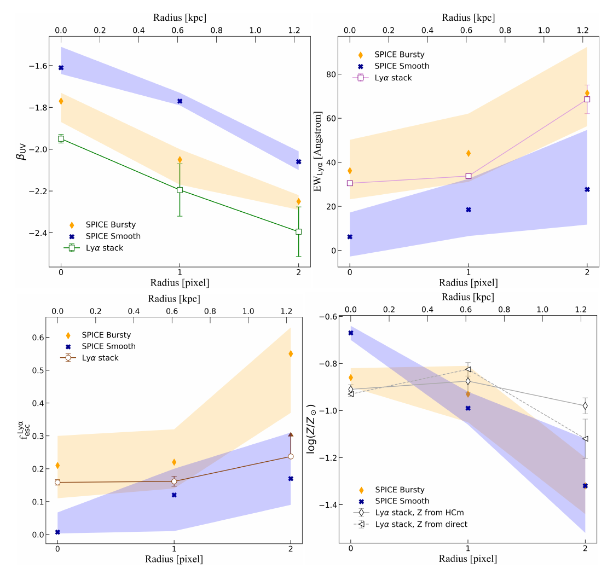

Lyα equivalent width rises with radius
The stacked Lyα profile remains spatially extended while Hβ declines more rapidly, increasing the rest-frame equivalent width toward the galaxy outskirts.
Collaborator study · JWST stacks + SPICE
Stacked JWST/NIRSpec spectroscopy resolves the average internal structure of 287 Lyα emitters. Their outward-rising Lyα equivalent width and escape fraction favor SPICE’s bursty feedback model.

Individual high-redshift spectra are often too faint to map weak diagnostic lines spatially. Combining many aligned observations reveals the population-average structure.
The paper stacks 287 JWST/NIRSpec Lyα emitters above redshift four and extracts spectra in radial bins. It follows the ultraviolet continuum, Balmer emission, Lyα, ionisation-sensitive lines, and metallicity diagnostics from the central pixel into the outskirts.
This spatial approach is the key advance. An integrated spectrum can show a high Lyα escape fraction, but cannot tell whether photons are produced locally, scattered outward, or preferentially escape through lower-column-density paths.
The stacked Lyα profile remains spatially extended while Hβ declines more rapidly, increasing the rest-frame equivalent width toward the galaxy outskirts.
The profile increases from roughly 16% in the center to at least 24% in the outer bin, consistent with scattering and spatially varying escape paths rather than a uniform screen.
The analysis finds low oxygen abundance near 12 + log(O/H) ≈ 7.7 ± 0.2, high ionisation, little dust, and an elevated N/O ratio near −0.4.
The bursty model best matches the blue continuum and outward behavior of Lyα equivalent width and escape. The smooth model is too red and falls below the outer Lyα signal.
Each feedback model is compared with the UV slope, equivalent-width, escape-fraction, and metallicity profiles simultaneously.
Bursty feedback produces younger, bluer stellar populations and gas structures that sustain Lyα into the outskirts. The agreement across UV slope, equivalent width, and escape fraction supports a consistent interpretation, while the metallicity panel remains less decisive because of modelling and calibration uncertainties.
Interpretation boundary: stacked profiles describe a population average and can mix galaxies with different sizes, orientations, and evolutionary states. Agreement does not imply that every observed Lyα emitter follows the bursty track individually.